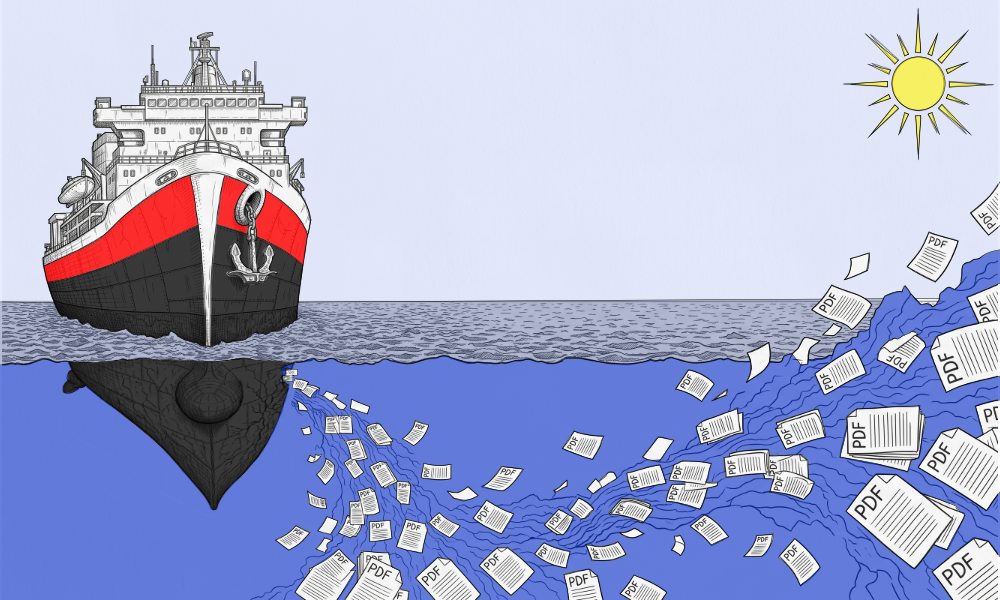

Corporations are constantly updating product lines and refining their brand message — new documentation, new sales brochures, fine detail poured into every page. And because everyone wants a piece of what the internet can deliver, companies pay SEO firms real money to paste that billboard anywhere someone will sell them space. It worked yesterday. It's still the status quo today.
Unfortunately, cyber-attacks are the other side of that shiny coin — commonplace now, and yet everyone still wonders how it happened to them. Here's the straight answer as to where some of the data is leaking.
Phishing is usually what gets the bad actors in the door. But how do they find their targets? How do they know exactly what to say in an email to make it sound convincing? It's called corporate data leakage, and it's happening at scale. We're all guilty of it too — LinkedIn, company websites, X, Meta, you know the platforms. But social media alone isn't enough. Attackers need context — something out on the public web that ties the knot tight enough to catch an unsuspecting employee off guard.
Our team has been working with PDFs since the internet became public infrastructure — working directly for the manufacturers who create them, to the customers who buy the products, to the integrators who use them every day in the field. That last part matters most: understanding how a PDF actually gets used once it leaves the manufacturer's hands. We'd like to introduce you to PDF metadata, and why it might be exactly the context a bad actor is looking for.
Very few people know that PDFs are structured documents. They have been since the mid-90s — but because metadata was rarely filled in, and no printer ever cared whether it was, it carried almost no weight. Today, with AI reading everything and bad actors looking for an edge, that same metadata is quietly leaking details about your internal processes — and you have no idea it's happening. Every PDF you publish without properly completed metadata is one more invitation handed out to the world.
We fix these cracks before they sink your ship — and turn your existing PDF library into a hardened asset.
More on that later. First, let's break this down in plain English.
Say a company is launching a new line of widgets, with all the fanfare that comes with it — social media posts, product brochures, case studies, data sheets, installation manuals, a splash page on the website, everything money can buy. Most people looking at a finished brochure never realize how many departments this launch just touched. Sales, marketing, engineering, product development — it could be five or six teams working the same launch. Then, shortly before launch day, legal, HR, and the C-suite all take a final pass. Another set of eyes is always a good thing, right?
Even with all those reviews, nobody catches it: the software your employees used to build those PDFs has been quietly writing information into the file the whole time — sometimes a name, sometimes just a trace of the machine that made it. To a bad actor building a target list, that's money just a click away.
That's money just a click away.
Now to be clear, not every PDF carries a personal name, and again, most metadata fields come back blank. But even blank, they still leave behind the software that produced them and the exact dates it happened on. That alone can hand an attacker a blueprint for the machine that built it — the operating system, the software version, and the vulnerabilities that go with it. Especially if that machine is a laptop or tablet, since those travel with the user and often end up connected to public networks. Now reflect back to all the departments that this product launch has touched.
On to the fix.

Your company has spent years building a library of real answers — spec sheets, manuals, case studies. Real expertise. None of that changes. What changes is how it gets used and found on the web — and that starts with understanding how a few basic gears turn.
We've spent 35+ years in physical security systems, and saw this blind spot coming a long way off — so we built the fix: the PDF Silo Cleaner, patent-pending.
This one process delivers two benefits for every PDF in a folder: it strips out the vulnerable information, and adds current, AI-friendly metadata — in a single pass.
-
01
Scan
We scan your existing PDF library folder by folder and hand you back a full list of what's inside — nothing gets rewritten or replaced at this stage, this is just a look under the hood.
-
02
Inject
We inject current, accurate metadata into every file — title, author, subject, keywords, and ownership. This same process strips out the old nonsense and removes every trace of how the document was created, so AI systems can identify the PDF as your property, not a liability.
-
03
Seal
We can seal it with a real certificate, so it's verifiable, not just labeled.
Let's run a free scan on a sample of your library so you see exactly what a bad actor sees right now. Then we'll show you what it takes to make that same file speak fluently to trusted AI systems instead.
Think of your company like a ship that's been sailing the same course for years — a good course, it's the one that got you here. But right now, that hull has cracks you haven't even seen yet: every PDF still leaking the old data is a small crack below the waterline. Compound that with the market itself turning toward AI-mediated search, and you've got two problems moving at once. Miss the turn, and you don't crash — you just quietly drift, taking on more water every day it goes unpatched. A year from now, you're 180 degrees off course, listing, and wondering where all your customers went. Same ship, same crew, wrong direction — and no alarm ever rang, because nothing was technically "broken." The market just turned without you. Let's fix that before it does.
This is the fix, in one sentence: we patch the cracks below the waterline, and give your ship a heading it can actually hold. Years of hard-earned expertise stop leaking. Your PDFs start working as the structured documents they were always meant to be, and show up where your future customers are already looking.
Not adrift. Not leaking. Hardened.